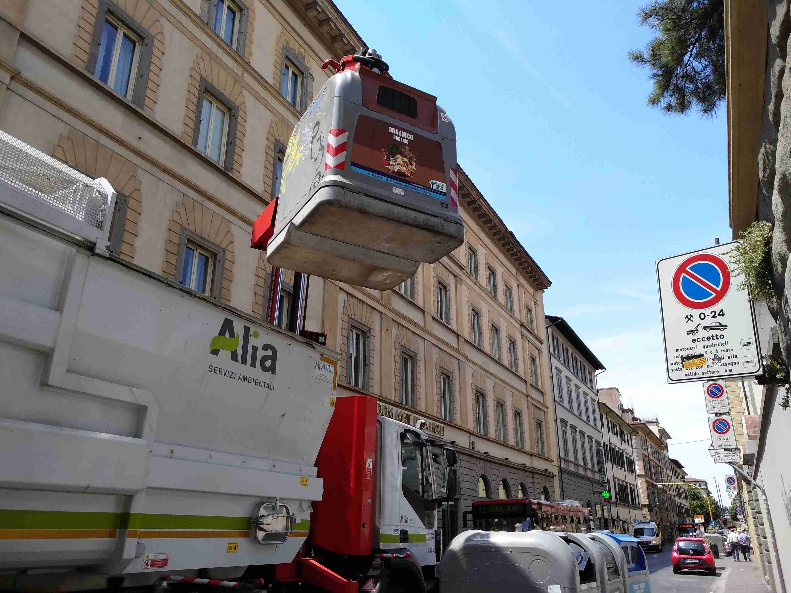

Flying trash can. These huge, cumbersome trash cans for some strange reason give me anxiety whenever I walk past them. It might be due to my inability to potentially do anything to them except for being spiritually bullied by these guys. One day I saw them being pulled up like toys and felt dazzled by childish awe and a slight strike of existential crisis.